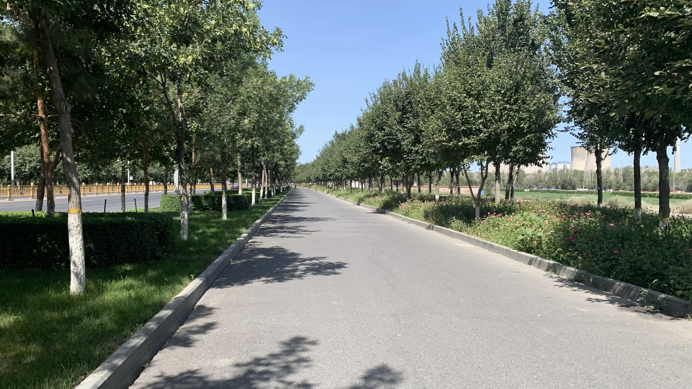
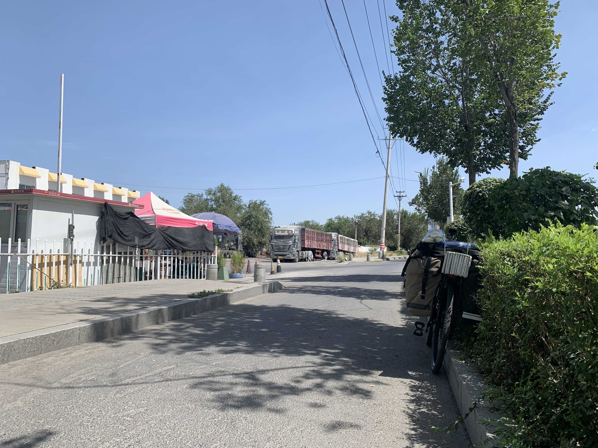
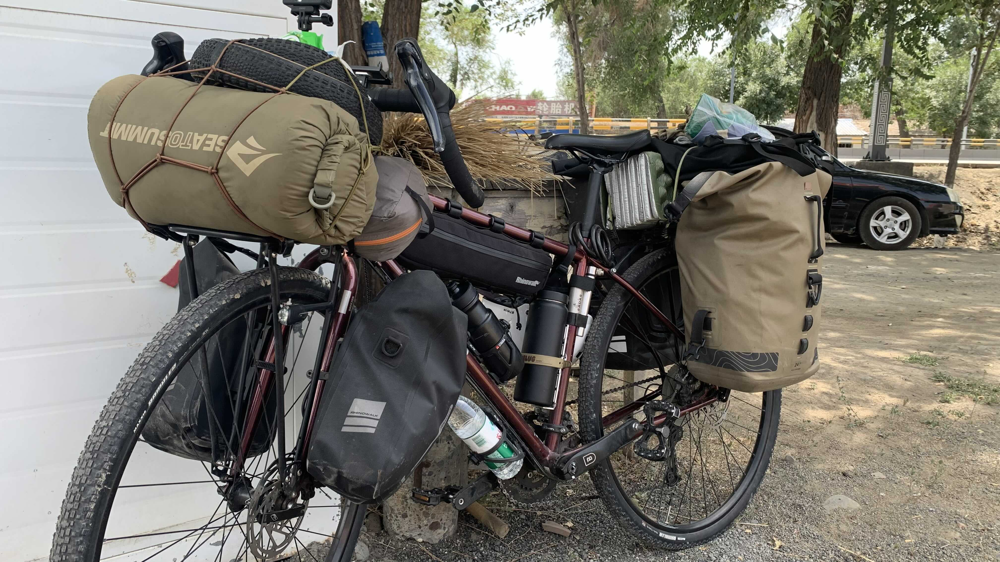
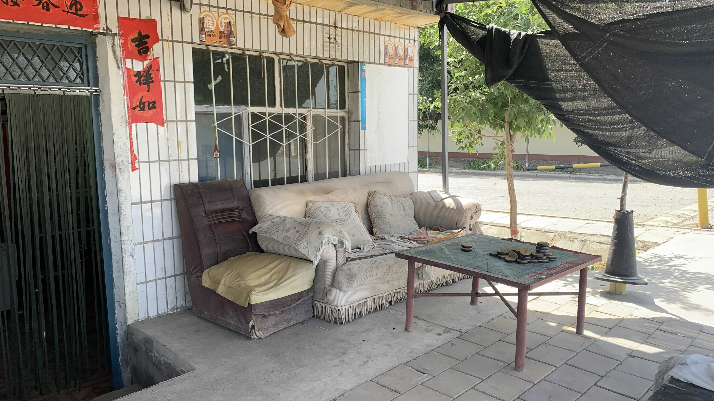
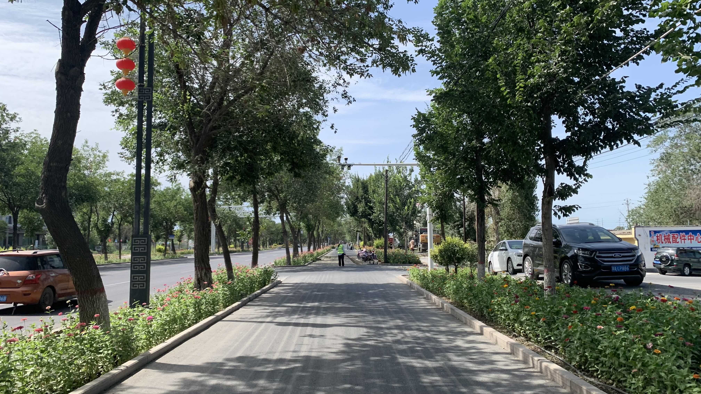
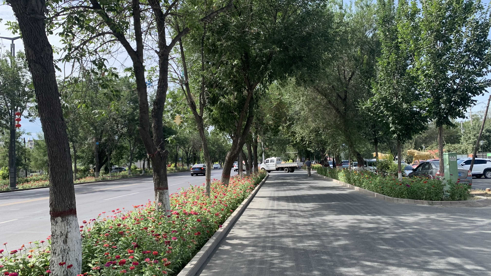
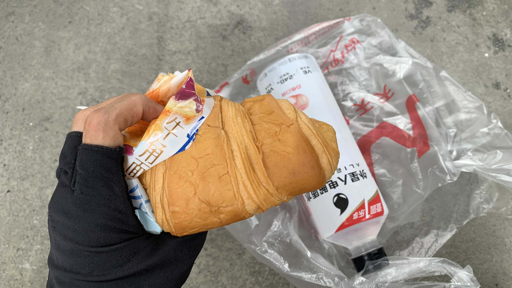

k-Day 142｜找陰影
中午下樓退房，大廳的自行車都消失了，老闆說那些都是退休的七十歲大叔，他們一早就要往口岸方向走。

太陽好大。今天一直擠在樹蔭下騎車。

身體並不累，但是每隔一小時就得躲進陰影。

下午三點，酒店老闆給我的水已經喝光，停在加油站外的警衛亭背後吃午餐。

下午四點，經過一家國道旁的雜貨店，買了一瓶百事可樂，坐在坐在屋簷下休息。

新疆的市鎮綠化真的相當不錯，行道樹下的花也都照顧得很好。

五點半接近沙灣，買了外星人電解水和牛角麵包。麵包裡面經常有一片食用酒精防腐片，因此麵糰裡總是充滿一股發酵味，加上配料稀疏，就產生一種嘴裡沒滋沒味，鼻腔又受到發酵味攻擊的狀況。

吃飽後往前騎了一陣，還沒抵達市區突然飄了點雨。在附近問了民宿，老闆打電話到派出所問了幾個人，都說不讓住。
那就回到加油站吧。今天的加油站警衛很熱情地帶著我到旁邊廢棄的過磅站，下雨颳風也不怕，要是想上廁所也相當便利。
今日花費：早餐 19.4、午餐 23元